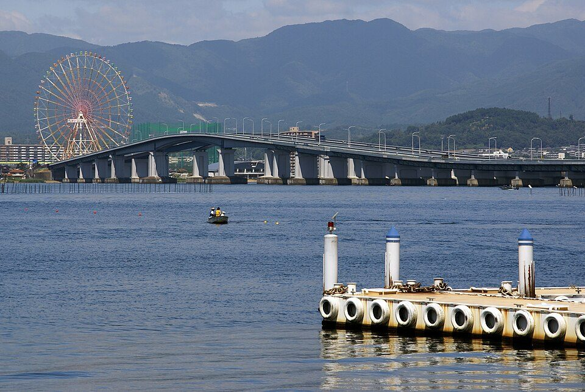
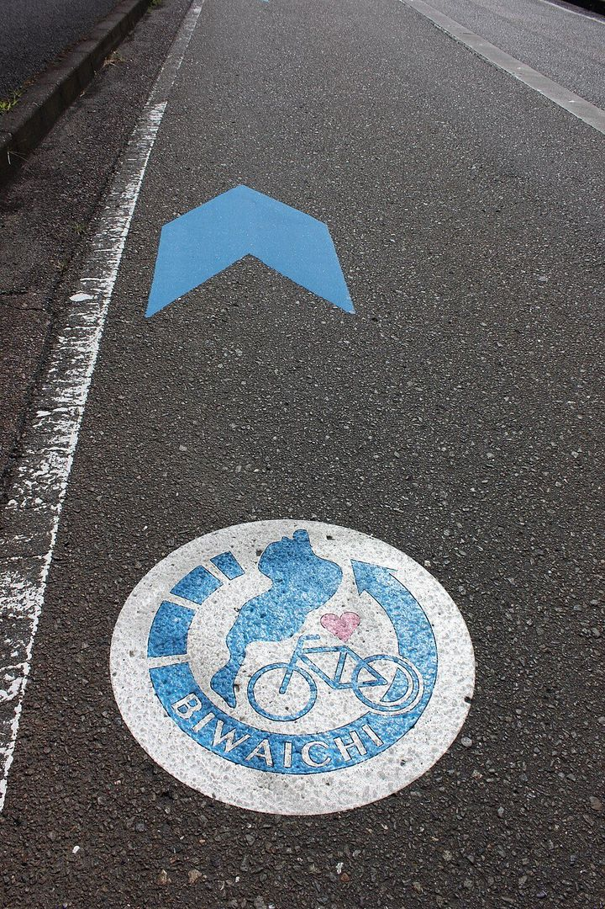
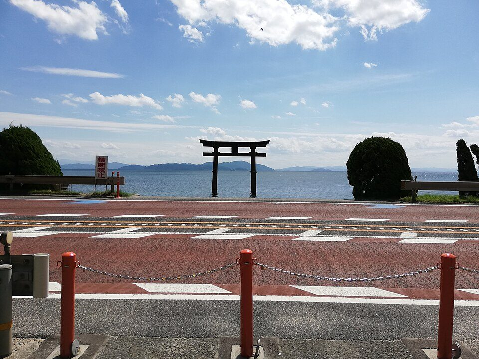
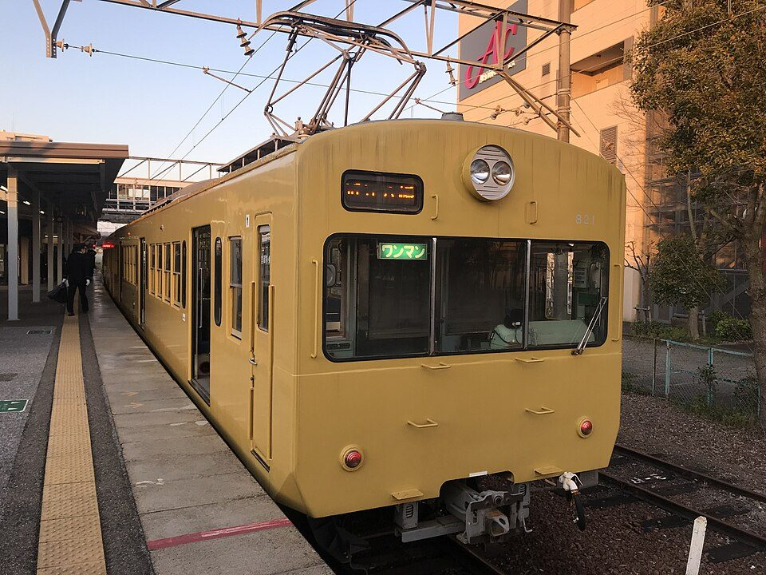
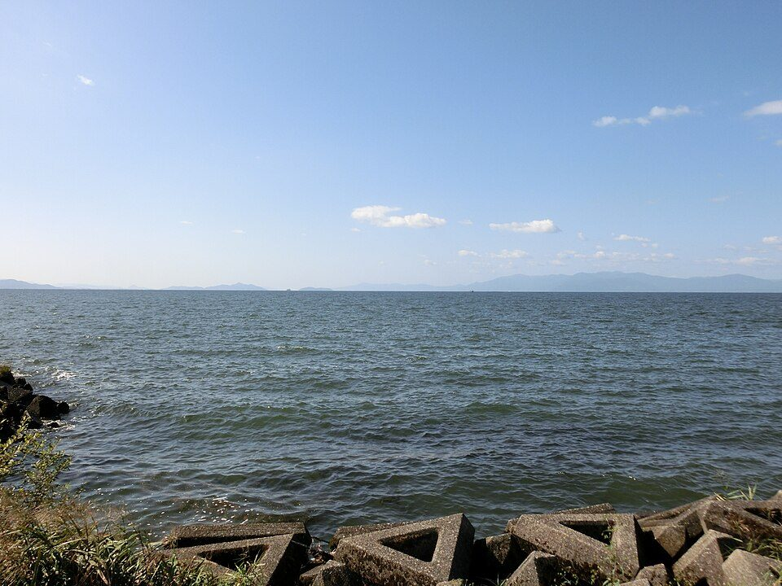

ビワイチの始め方：距離と日程、自転車の借り方・運び方、滋賀県の決まり（2026年版）
要点まとめ
「ビワイチ」は、琵琶湖を自転車で一周することです。滋賀県のビワイチ推進条例では、琵琶湖の一周だけでなく、琵琶湖やその他の県内の観光地・景勝地を自転車で周遊することも「ビワイチ」に含めています[8]。この記事では、はじめて走る人や家族連れに向けて、距離と日程の組み方、走る向きと路面の表示、自転車の借り方・運び方、滋賀県の決まり、休憩・修理の拠点、季節と天気を、滋賀県・国土交通省などの情報でまとめました。

ビワイチはどんなコース？
国のナショナルサイクルルート：延長193km
2019年11月7日に、国の第1次ルートに指定された
国土交通省は2019年（令和元年）11月7日、日本を代表し世界に誇りうるサイクリングルートとして、ビワイチを第1次ナショナルサイクルルートに指定しました。延長は193kmで、大津市の瀬田唐橋を起点・終点に、琵琶湖岸を反時計回りの一方通行で一周します[1]。全国のナショナルサイクルルートの一覧は、ロードバイクの始め方の記事にまとめています。
一周約200km、北湖約150km、南湖約50km
琵琶湖大橋で分けて、北側だけ・南側だけでも走れる
滋賀県のサイクリングマップは、琵琶湖を一周すると約200km、琵琶湖大橋の北側（北湖一周）だけなら約150km、南側（南湖一周）だけなら約50kmとしています[2]。国土交通省の紹介ページも、約200km・約150km・約50kmの数字を挙げ、走り慣れた人なら1日で走れる距離だが、おすすめは2〜3日かけて観光や食事を楽しむビワイチだとしています[9]。国のルートとしての延長（193km）と案内の距離（約200km）が違う理由の公式な説明は、見つかりませんでした。
低速コースと上級コース
国のルートに選ばれたのは、家族連れ向けの低速コース
滋賀県は、走るレベルに合わせて2つのコースを設けています。低速コースは家族連れなどの初・中級者向けで、交通量の少ない車道や自転車歩行者専用道路、公園内の通路などを走ります。上級コースはスポーツとして楽しむ上級者向けで、原則として車道を走ります[3]。ナショナルサイクルルートの第1号に選ばれたのは、低速コースです[3]。
補足：「輪の国びわ湖推進協議会」について
ビワイチの案内サイト（biwako1.jp）や、完走の認定証の発行元である「輪の国びわ湖推進協議会」は、2009年に設立された民間の団体です[10]。この記事では、県や国の情報と区別するため、「協議会は〜と案内している」と書いています。
走る向きと路面の表示
反時計回りがおすすめ
琵琶湖を左手に見て走ると、湖岸の近くを走れる
県のマップは、ビワイチは反時計回りに走るのがおすすめとしています。自転車は左側通行なので、琵琶湖を左手に見て走るほうが湖岸近くを走れ、交差する道路も少なくなるためです[2]。国のルートも、反時計回りの一方通行として指定されています[1]。

青線は滋賀県独自の路面表示
矢羽根に加えて、ルートを示す県独自の青線がある
自転車の交通量が多い道路などには、自転車の通る位置と方向を示す矢羽根型の路面表示があります。ビワイチでは、これに加えて県独自の取り組みとして、ルート案内と自転車の走る位置を示す青線を引いています[3]。県のマップによると、青線は反時計回りを勧めているため琵琶湖側にだけ引かれていて、青破線は車線の中に、青実線は車線の外側にあります[2]。
走りにくい区間を知っておく
湖北のアップダウンと、湖西の交通量の多い道に注意
協議会は、湖の周りはほぼ平らだが、湖北の木之本〜塩津と、塩津から永原へ抜ける途中にアップダウンがあると案内しています。湖西の高島〜北小松は交通量の多い国道を走ることになり、堅田〜大津港は自転車道が整備されておらず交通量の多い道を走るため要注意としています。堅田から琵琶湖大橋を渡り、東岸を大津港まで走る人もいるそうです[11]。
琵琶湖大橋は、自転車は無料
有料道路だが、自転車・歩行者は通行料がかからない
琵琶湖大橋は滋賀県道路公社の有料道路ですが、自転車・リヤカー・歩行者は無料です[14]。橋には1980年（昭和55年）3月に自転車歩行者道が追加されました[15]。自動車の通行料を取る期限は2047年（令和29年）1月21日です[16]。
くわしく
- 耐震補強工事で、2026年12月18日まで月4日程度（9〜17時）、南側の旧橋を止めて北側の新橋を対面通行にする[17]
日程の組み方
県のマップのモデルプランは、休憩も含めた平均の速さを時速12kmとして計画しています[2]。時速12kmで計算すると、96kmなら休憩込みで約8時間です（筆者の計算）。
| 日程 | 出発地 | 1日目の宿泊地 | 2日目の宿泊地 | 3日目 |
|---|---|---|---|---|
| 1泊2日 | 大津 | 木之本あたり（96km） | — | — |
| 1泊2日 | 米原 | 近江舞子あたり（85km） | — | — |
| 2泊3日 | 大津 | 彦根あたり（65km） | 近江高島あたり（80km） | 3〜5時間で36〜60km程度 |
| 2泊3日 | 米原 | 近江高島あたり（75km） | 近江八幡あたり（86km） | 3〜5時間で36〜60km程度 |
宿泊地の位置は、上の模式図を見てください。
初心者は北湖一周から
1泊2日なら、一周約200kmより北湖一周約150kmを
県のマップは、初心者が1泊2日に挑むなら、完全一周の200kmよりも北湖一周の150kmを、2泊3日のプランに準じて計画すると、それほど無理なく走れるとしています[2]。協議会も、自転車の旅に慣れない1日目の距離は短めにし、早めに宿に着く余裕のある行程を勧めています[11]。
10〜4月は17時までに走り終える
日暮れの早い時期は、17時までに走り終える計画に
県のマップは、できるだけ早朝に出発し、特に日暮れの早い10月から4月は、17時までに走り終える計画を立てるよう勧めています[2]。協議会は、日没後の走行は禁物とし、予定の地点に着く前に日が暮れると、焦って無理な運転をしがちになると説明しています[11]。

車で来るときの駐車場
道の駅や湖岸の駐車場には止めない
県のマップは、サイクリングの人は道の駅や湖岸の駐車場への駐車を遠慮するよう呼びかけています[2]。協議会は、琵琶湖大橋の東詰にあるショッピングセンター「ピエリ守山」の専用エリアと、近くの美崎公園の駐車場が、ビワイチをする人向けに無料で開放されていると案内しています[11]。
くわしく
- 県は2026年、5月2日〜11月3日の土日祝に、木之本合同庁舎の駐車場（20台）を無料開放した[18]
自転車を借りる・運ぶ
県は、公共交通の主なアクセス地点にあってレンタサイクルなどを備えた拠点を「ゲートウェイ」と呼び、米原駅サイクルステーションと大津港サイクルステーションを挙げています[19]。協議会は、借りた場所に返さなくてよい「途中返却」のサービスを、米原駅の「びわこ一周レンタサイクル」と大津港の「ビワイチバイク」で展開していると案内しています[6]。
| 項目 | びわこ一周レンタサイクル（米原駅） | ビワイチバイク（大津港） |
|---|---|---|
| クロスバイク 1日 | 平日4,700円、土日祝5,800円、繁忙期6,400円[20] | 5,500円（ハイシーズン6,600円）[21] |
| ロードバイク 1日 | 平日6,200円、土日祝7,200円、繁忙期7,800円[20] | ベーシック7,700円（ハイシーズン8,800円）[21] |
| 電動アシスト 1日 | 料金のページに記載なし | E-バイク（折り畳み）7,700円（ハイシーズン8,800円）など[21] |
| 途中返却の料金 | 1台3,500円（事前予約が必要。繁忙期は使えない）[20] | 1台3,300円（他拠点返却。前日15時までに予約）[22] |
| 料金に含まれるもの | ヘルメット[20] | ヘルメット・ライト・対人対物保険[21] |
米原駅：びわこ一周レンタサイクル
クロスバイクは平日1日4,700円（税込）から
びわこ一周レンタサイクルは、クロスバイク・ロードバイクのほか、身長120〜150cm向けのキッズバイクを用意していると案内しています。貸し出し・返却は9時〜17時で、支払いは現金かPayPayのみとしています[20]。
大津港：ビワイチバイク
電動アシスト自転車（E-バイク）も借りられる
ビワイチバイクは、料金にヘルメット・ライト・対人対物保険が含まれるとしています。電動シティサイクルにはチャイルドケアシート付きもあり、子ども用のジュニアバイクやチャイルドトレーラーもあると案内しています[21]。他拠点返却では、木之本観光案内所、高島市マキノ物産会館、滋賀県立長浜ドーム、近江八幡ユースホステル、京都市の施設などに返せるとしています[22]。
近江鉄道は、自転車をそのまま載せられる
持ち込み料は無料で、運賃だけで乗れる
近江鉄道は、サイクルトレインとして、本線（米原〜貴生川）と多賀線（高宮〜多賀大社前）で電車内に自転車を持ち込めると案内しています。持ち込み料は無料（運賃のみ）で、平日は昼間（おおむね9時〜16時）、土日祝は終日使えるとしています[7]。

| 交通機関 | 載せ方 | 料金 | 主な条件 |
|---|---|---|---|
| 近江鉄道（本線・多賀線） | そのまま載せられる | 持ち込み料無料（運賃のみ） | 平日はおおむね9〜16時。彦根駅・八日市線は使えない[7] |
| JR西日本の列車 | 解体して専用の袋に入れる | 無料 | 3辺の最大の和250cm以内・30kg以内、2個まで[23] |
| 竹生島クルーズ（今津港・長浜港） | 専用の袋に完全に入れる | 持込料無料（乗船料は別） | 1便6台まで、予約はできない[24] |
| ミシガン（大津港など） | 載せられない | — | —[24] |
輪行：袋に入れて電車で運ぶ
JRでは、解体して専用の袋に入れれば無料で持ち込める
JR西日本の旅客営業規則では、3辺の最大の和が250cm以内、重さ30kg以内の物を、無料で車内に2個まで持ち込めます。自転車は、解体して専用の袋に入れたもの（折りたたみ式は、折りたたんで専用の袋に入れたもの）に限られます[23]。協議会は、琵琶湖の周りはJRが取り巻いているので、輪行ができればどこでもショートカットできると案内し、途中でやめる場合に備えて輪行袋を持っておくことを勧めています[25][26]。新幹線の荷物の決まりなど、輪行のくわしいことはロードバイクの始め方の記事にまとめています。
船に載せて湖を渡る
竹生島クルーズは、袋に入れれば持込料は無料
琵琶湖汽船は、今津港・長浜港を発着する竹生島クルーズで、専用の袋に完全に入れた自転車を、持込料無料で受け付けるとしています（乗船料は別）。1便6台までで予約はできず、自転車のままでは持ち込めません。ミシガンクルーズには、自転車は積めないとしています[24]。
荷物を宿へ送る
県のマップは、宿あての手荷物配送を紹介している
2024年7月時点の県のマップは、ヤマト運輸の「宿泊施設宛て」「自分宛て」の手荷物配送を紹介しています。滋賀県内への当日配送は、米原市・長浜市・高島市の営業所では12時まで、それ以外の営業所では14時までの受け付けです[27]。関西・北陸を鉄道で回るきっぷについては、WESTERポイント関西・北陸フリーパスの記事にまとめています。
滋賀県の決まりと安全
自転車保険の加入は義務
自転車に乗るなら、損害賠償の保険に入る義務がある
滋賀県の自転車条例（滋賀県自転車の安全で適正な利用の促進に関する条例）は、自転車に乗る人（未成年者を除く）に、自転車損害賠償保険などへの加入を義務づけています。ほかの人が加入の手続きをしているときは、この限りではありません[4]。保険の義務は2016年（平成28年）10月1日に始まりました。罰則はありません[5]。
ビワイチ推進条例
11月3日は「ビワイチの日」、9日までが「ビワイチ週間」
2022年（令和4年）3月に議員提案で制定され、4月1日に施行された滋賀県のビワイチ推進条例は[19]、11月3日を「ビワイチの日」、同日から9日までを「ビワイチ週間」と定めています。サイクリストには、ルートの周辺に住む人や歩行者、自動車の安全な通行、地域の生活環境・自然環境との調和に配慮するよう努めることを、ルートを走る自動車の運転者には、サイクリストが安全に通れるよう配慮するよう努めることを求めています[8]。
ヘルメットとライト
滋賀県のヘルメット着用率は9.7%（2026年6月）
2023年（令和5年）4月1日から、すべての自転車利用者にヘルメットの着用が努力義務になりました[2]。警察庁の2026年6月の調査では、滋賀県の着用率は9.7%で、全国の24.4%を下回っています[29]。県の条例は、夜間にライトをつけ反射器材を備えること、傘を差したり携帯電話を使ったりしながら運転しないことを定めています[4]。
くわしく
- 県の条例は、歩行者が多い歩道などでは自転車を押して歩くよう努めるとしている[4]
- 県は、手信号やバックミラーで、周りに配慮して走るよう呼びかけている[19]
- ヘルメットの選び方や、自転車の青切符（反則金）の制度は、ロードバイクの始め方の記事にまとめている
ビワイチに関係する決まりと、主な出来事を年表にしました。
- 2016年2月26日
滋賀県の自転車条例を公布・施行
- 2016年10月1日
自転車保険の加入が義務に
- 2018年4月26日
県のアプリ「BIWAICHI Cycling Navi」の提供開始
無料[19]
- 2019年11月7日
国の第1次ナショナルサイクルルートに指定
- 2020年10月1日
保護者・レンタサイクル事業者の保険加入も義務に
- 2022年4月1日
ビワイチ推進条例を施行
- 2023年4月1日
ヘルメットの着用が努力義務に
すべての自転車利用者が対象[2]
- 2026年4月
アプリに、休憩を促す通知などの新機能
休憩・修理・完走の証明
サイクルサポートステーション
トイレ・空気入れ・工具の貸し出しが共通のサービス
県は、スポーツバイク対応の空気入れや自転車用工具の貸し出し、トイレの提供などをする「サイクルサポートステーション」の整備を進めています。のぼりなどで、サポートステーションであることを示しています[19]。施設の数の公表値は見つかりませんでしたが、県のページからリンクされている公式マップのデータに載っているのは374件でした（2026年11月17日に筆者が数えた）[31]。
滋賀県サイクリストにやさしい宿
自転車を部屋か屋内に置ける宿。宅配の受け取りもできる
協議会は、県が「滋賀県サイクリストにやさしい宿」の認定を行っていると案内しています[11]。協議会のサイトによると、この宿は、自転車を客室に持ち込めるか屋内の安全な場所に保管できること、チェックイン前・チェックアウト後の荷物の一時預かり、宅配便（自転車を含む）の受け取り・発送、スポーツタイプの自転車に対応した空気入れと修理工具の貸し出しなど、7つの必須項目をすべて満たしています。サイトの一覧には60件が載っていました（2026年11月17日の閲覧時）[32]。
くわしく
- 協議会は、ゲストハウスが大津、近江八幡、彦根、マキノ、近江舞子などにあると案内している[11]
- 協議会は、湖岸にはキャンプ場も多いとしている。キャンプの基本はキャンプの始め方の記事に[11]
パンクに備える、出張修理を頼む
守山市から長浜市までの湖岸では、出張修理を頼める
協議会は、トラブルで最も多いのはパンクだとして、予備のチューブと携帯式の空気入れを持つよう勧めています[26]。また、ビワイチをする人向けの出張修理サービス「びわ湖サイクルレスキュー」を案内しています。料金は修理費（部品代＋工賃）に、距離に応じた出張料金を加えたもので、範囲は守山市・野洲市・東近江市・近江八幡市・彦根市・米原市・長浜市のびわ湖沿岸です[33]。
県の無料アプリ「BIWAICHI Cycling Navi」
コースのナビや、サポートステーションの場所がわかる
県が2018年4月26日に提供を始めた無料のアプリで、おすすめコースのナビゲーションのほか、レンタサイクルやサイクルサポートステーション、自転車保険、走るときの注意地点の情報を確かめられます[19]。2026年4月には、設定に合わせて30分・60分・120分がたつと休憩を促す通知や、近くのおすすめスポットや危険箇所を知らせる機能が加わりました[30]。
完走の認定証（協議会）
4つのエリアで1か所ずつチェックすれば申請できる
協議会は「びわ湖一周サイクリング認定証」を発行しています。スマートフォンで登録し、チェックポイントでクイズに答えてチェックします。湖南・湖東・湖北・湖西の各エリアで最低1か所ずつチェックすると申請でき、最初のチェックから最後のチェックまでの日数に制限はありません[34]。
はじめての人を手助けする催し（2026年）
11月7〜8日に、湖岸に「ヘルプステーション」を置いた
県と滋賀プラス・サイクル推進協議会は、2026年10月24日〜11月29日を「ビワイチの日・ビワイチ週間2026」とし、5回目の今年は、11月7〜8日に長浜市と高島市の湖岸に「ヘルプステーション」を置きました。自転車の軽いメンテナンスや、スマホの充電、最寄り駅まで車で送り届ける「途中フィニッシュ支援」（輪行袋の貸し出しも）を行うとしていました[35]。
季節と天気、数字で見るビワイチ
おすすめは5月と秋
協議会は、春から初夏（特に5月）と秋を勧めている
協議会は、気温・天候・風などを考えると、春から初夏（特に5月）と秋が適していると案内しています。夏の炎天下の長時間の走行は熱中症の危険が高く、冬は湖北に雪が積もって走るのが難しくなるとしています[11]。
| 月 | 平均気温 | 日最高気温 | 降水量 | 平均風速 | 降雪 |
|---|---|---|---|---|---|
| 1月 | 3.9 | 7.1 | 112.0 | 3.7 | 36 |
| 2月 | 4.2 | 7.7 | 99.6 | 4.0 | 29 |
| 3月 | 7.3 | 11.6 | 114.9 | 3.3 | 6 |
| 4月 | 12.4 | 17.4 | 117.3 | 2.8 | 0 |
| 5月 | 17.6 | 22.6 | 146.9 | 2.5 | — |
| 6月 | 21.8 | 26.0 | 175.6 | 2.4 | — |
| 7月 | 26.1 | 30.2 | 219.0 | 2.5 | — |
| 8月 | 27.5 | 32.1 | 124.6 | 2.5 | — |
| 9月 | 23.6 | 27.6 | 167.7 | 2.9 | — |
| 10月 | 17.7 | 21.8 | 140.7 | 3.1 | — |
| 11月 | 11.7 | 15.6 | 85.8 | 2.9 | — |
| 12月 | 6.5 | 9.9 | 105.9 | 3.7 | 11 |
| 年 | 15.0 | 19.1 | 1610.0 | 3.0 | 81 |
「—」は、気象庁の表に値がない月です。彦根の最深積雪の平年値は、年で26cmです[36]。
湖西の強風「比良おろし」
比良山地から吹き降りる強風で、3〜4月に最も多い
滋賀県の資料によると、比良おろしは、若狭湾方面からの風が比良山地の南東斜面を琵琶湖側に駆け降りる強風です。2019〜2023年に比良山麓で日最大瞬間風速15m/s以上の強風が吹いた日数を月別にみると、3〜4月が最も多くなっていました[37]。2022年4月29日には夕方に急に吹き始め、JR湖西線が夕方から和邇〜近江塩津で運転を見合わせた例が紹介されています[37]。

体験者数は、3年連続で10万人以上
2025年は約11万5千人（滋賀県の推計）
滋賀県の推計では、2025年（令和7年）の琵琶湖一周サイクリングの体験者数は約11万5千人で、2024年より3.4%減りましたが、3年連続で10万人以上になりました。推計は、アプリの走行データと、自転車の通行台数を数える「エコカウンター」のデータによるものです[30]。2022年は約9万8,000人で、2021年より16.7%増えていました[38]。県の第2次自転車活用推進計画の概要版は、第1次計画の目標（20万人）を下回った理由として、新型コロナウイルス感染症の拡大の影響を挙げています[39]。
ほかの行き先をデータで比べたいときは、国内旅行の行き先をデータで選ぶ記事もあります。
今回確認できなかった点
- 国のルートの延長（193km）と、県の案内の距離（約200km）が違う理由
- 琵琶湖大橋の自転車歩行者道の幅や通り方、耐震補強工事の規制がかかるかどうか
- サイクルサポートステーションの数の公表値（本文の374件は、公式マップのデータを筆者が数えたもの）
- 彦根港から自転車を積める船（2024年7月時点の県のマップに載っている「サイクルージング」）の2026年の運航
- 比良おろしについて、自転車向けに注意を呼びかける公式の案内
- 「滋賀県サイクリストにやさしい宿」の、県の公式の認定数
出典（39件）
閲覧日はいずれも2026年11月17日
- 第１次ナショナルサイクルルートを指定しました！（2019年11月7日）（国土交通省）
- ビワイチサイクリングマップ 解説面（2024年7月第八版、PDF）（滋賀県・滋賀プラス・サイクル推進協議会）
- ビワイチ整備の基礎知識 ～自転車通行空間の整備～（滋賀県 道路保全課）
- 滋賀県自転車の安全で適正な利用の促進に関する条例（本文、PDF）（滋賀県）
- 滋賀県自転車の安全で適正な利用の促進に関する条例（滋賀県 道路保全課）
- レンタサイクル（輪の国びわ湖推進協議会）
- サイクルトレインご利用案内（近江鉄道）
- ビワイチ推進条例（PDF）（滋賀県）
- GOOD CYCLE JAPAN「ビワイチ」（国土交通省）
- 「輪の国びわ湖」とは？（輪の国びわ湖推進協議会）
- 計画しよう（輪の国びわ湖推進協議会）
- ナショナルサイクルルート指定に関する審査総括表 ②ビワイチ（2019年、PDF）（国土交通省）
- 交通ルールとマナー（輪の国びわ湖推進協議会）
- 通行料・駐車場料金（滋賀県道路公社）
- 琵琶湖大橋有料道路（滋賀県道路公社）
- よくあるご質問（滋賀県道路公社）
- 琵琶湖大橋耐震補強工事による通行規制について（2025年8月29日）（滋賀県）
- 木之本合同庁舎をビワイチの駐車場として使用できます！（2026年4月30日）（滋賀県）
- ビワイチに関する各種事業や取組みについて（滋賀県 ビワイチ推進室）
- レンタル料金・方法（びわこ一周レンタサイクル（米原駅））
- 料金プラン（ビワイチバイク（大津港））
- 他拠点返却（ビワイチバイク（大津港））
- 旅客営業規則 第10章 手回り品（PDF）（JR西日本）
- よくあるご質問（琵琶湖汽船）
- 走り出してから（輪の国びわ湖推進協議会）
- 用意するもの（輪の国びわ湖推進協議会）
- ビワイチサイクリングマップ 地図面（2024年7月第八版、PDF）（滋賀県・滋賀プラス・サイクル推進協議会）
- 「滋賀県自転車の安全で適正な利用の促進に関する条例」を改正しました（滋賀県 道路保全課）
- 自転車乗車用ヘルメット着用率調査結果（2026年6月調査、PDF）（警察庁）
- 3年連続で10万人以上が体験するビワイチ!更なる地域の魅力発信等に向けてアプリに新機能を搭載！（2026年4月10日）（滋賀県）
- ビワイチサイクルサポートステーションマップ（滋賀プラス・サイクル推進協議会）
- 滋賀県サイクリストにやさしい宿（輪の国びわ湖推進協議会）
- びわ湖サイクルレスキュー（輪の国びわ湖推進協議会）
- びわ湖一周サイクリング認定証（輪の国びわ湖推進協議会）
- 5th Anniversaryビワイチの日･ビワイチ週間2026を開催します！（2026年10月2日）（滋賀県）
- 彦根（滋賀県）平年値（年・月ごとの値）主な要素（気象庁）
- 比良おろし（PDF、保存版、2026年9月2日時点）（滋賀県）
- 令和4年の琵琶湖一周サイクリング体験者数は「約9万8,000人」でした！（滋賀県 ビワイチ推進室）
- 第2次滋賀県自転車活用推進計画 概要版（PDF）（滋賀県）
写真・画像の出典（5件）
- 琵琶湖大橋（滋賀県守山市側から）
写真: 663highland／Wikimedia Commons（CC BY 2.5） - 道路に描かれたビワイチの表示と青い矢羽根（滋賀県高島市マキノ町の県道54号）
写真: SONIC BLOOMING／Wikimedia Commons（CC BY-SA 4.0） - 白鬚神社の湖中の大鳥居（滋賀県高島市）
写真: 先従隗始／Wikimedia Commons（CC0） - 近江鉄道の電車（近江八幡駅）
写真: Hahifuheho／Wikimedia Commons（CC0） - 長浜から見た琵琶湖
写真: Abasaa／Wikimedia Commons（パブリックドメイン）